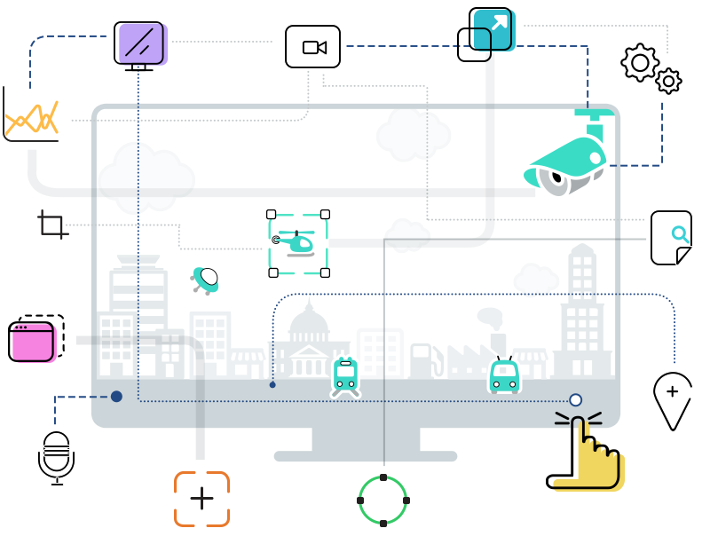

Что такое ITV?
ITV — российский разработчик программного обеспечения для систем безопасности и видеонаблюдения. Компания была основана в 2003 году и стояла у истоков индустрии цифрового видеонаблюдения, а сейчас является одним из лидеров отечественного рынка безопасности.
ITV всегда была новатором, формирующим технологическое будущее рынка, с более чем 30 патентами. Мы создаем инновационные и практичные решения, которые помогают нашим партнерам и клиентам достигать новых высот в безопасности и эффективности.
В портфеле продуктов ITV
Интеграционный комплекс технических средств безопасности
Интеллектуальная платформа для построения систем видеонаблюдения
Облачные сервисы видеонаблюдения (VSaaS)
Наши достижения
ITV — один из ведущих мировых разработчиков видеоаналитики на основе классических алгоритмов и искусственного интеллекта. Мы предлагаем кастомизацию видеоаналитики по запросу клиента, а также интеграцию сторонних модулей.
Программное обеспечение ITV применяется в проектах любого масштаба и во всех отраслях, обеспечивая надежную защиту и эффективное управление.
Награды и достижения
2017 Benchmark Innovation Awards
«Интеллект» стал финалистом премии журнала Benchmark как инновационный продукт в категории «ПО для охраны объектов» (Site Protection Software).
Лучший инновационный продукт 2017
Бессерверная система физической безопасности на основе ПО ITV и видеокамер Kraftway заняла первое место в конкурсе «Лучший инновационный продукт» на выставке Securika/MIPS 2017 в категории «Охранное телевидение и наблюдение».
Лучший инновационный продукт 2016
Уникальная возможность поиска по лицам в архиве системы видеонаблюдения ITV принесла ей 1-е место в конкурсе «Лучший инновационный продукт» на выставке Securika/MIPS 2016 в номинации «Системы охранного телевидения».
Диплом и награда «All-over-IP Аward - 2015»
Cистема видеонаблюдения ITV удостоена награды All-over-IP Award в номинации «Аналитика будущего».
Диплом и награда «All-over-IP Аward - 2014»
Cистема идентификации лиц «Face-Интеллект» была удостоена награды All-over-IP Award в номинации «Лучший продукт».
Награда «Гордость России»
Компания ITV стала победителем конкурса «Гордость России 2014» - первого конкурса, оценивающего вклад компаний в экспорт отечественных систем безопасности.
Диплом и награда XIX Международного форума «Технологии безопасности»
Модуль «Мониторинг технического состояния» удостоен премии «Лучшее достижение».